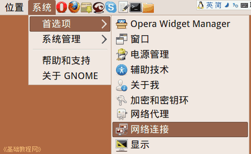
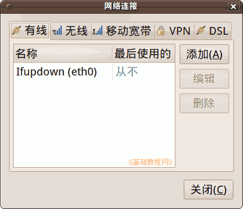
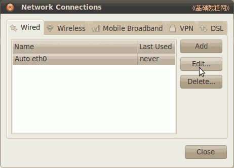
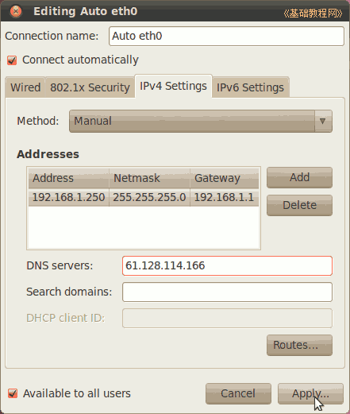
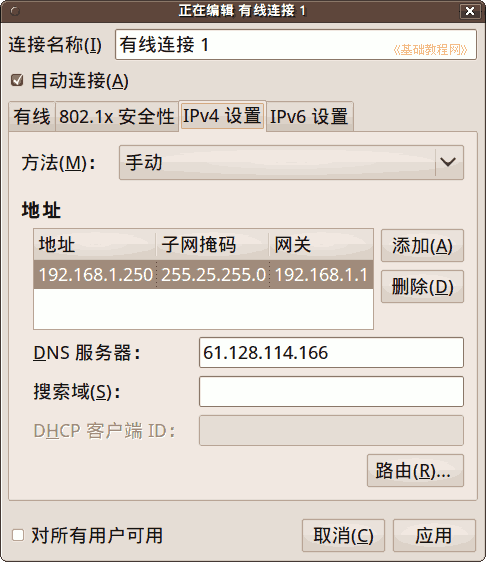
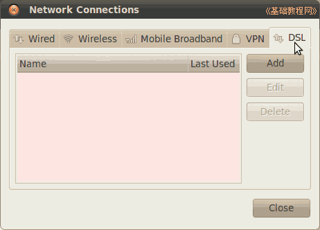
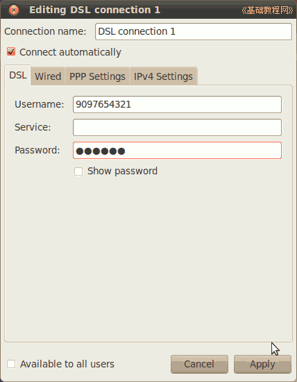
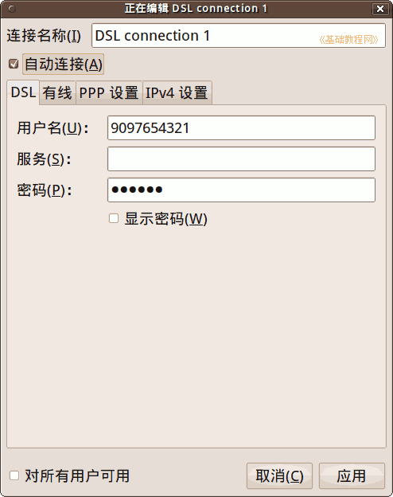
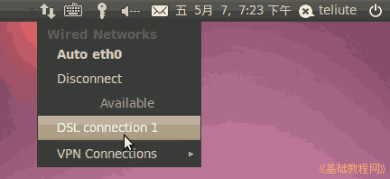

Ubuntu/GNOME 桌面程序指南
作者：TeliuTe 来源：基础教程网
二十七、网络连接 返回目录 下一课在这里，您可以设置连网的操作，根据自己的连网方式选择其中一个；
1、局域网连网
1）点菜单“系统 - 首选项 - 网络连接”，打开网络连接窗口；

2）窗口中包括有线、无线、移动、VPN 和 DSL 连网方式；

3）“有线”中主要设置通过局域网上网，选中列表中的设备，然后点右边的“编辑”按钮；

4）在出来的面板中，点击 IPv4 设置，在方法中选择手动、点“添加”，输入 ip 地址、子网掩码和网关，在下面输入 DNS 服务器地址；
 
2、宽带连接 ADSL
1）打开面板后，在里面选 DSL 标签，点下边的“添加”按钮；

2）在出来的面板中，打勾自动连接，输入用户名和密码，点“应用”，提示验证时，输入自己的密码；
 
3）完成后重新启动，或点面板的网络图标，选择 Auto Eth0 或 DSL 连接网络；

本节学习了网络连接的基础知识，如果你成功地完成了练习，请继续学习下一课内容；
本教程由86团学校TeliuTe制作|著作权所有
基础教程网：http://teliute.org/
美丽的校园……
转载和引用本站内容，请保留版权信息和本站链接。